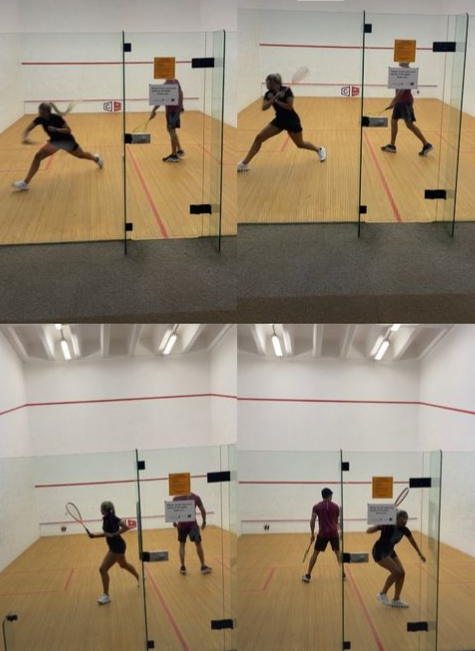

Home Page
Squash 🎾 (the sport... not the fruit😅):
I have been playing squash for close to a decade now
and I can safely say it is an all rounded sports that I can play
straight into retirement to keep fit.
- Cardiovascular fitness🫀:
The fast-paced nature of the game
can get your heart rate up and help you burn a lot of calories.
- Improved mental health🧠:
Squash can
help reduce stress, boost your mood, and improve your
self-esteem.
- Weight loss🏋🏾♀️:
Regularly playing squash can help you shed pounds and
improve your overall health.
- Increased strength💪🏾:
Playing squash
regularly can help increase your strength and improve your
overall fitness.
- Improved coordination🤾🏾♀️:
Squash requires a lot of hand-eye
coordination and quick reflexes.
- Improved agility⛹🏾♀️:
Squash requires a lot of sudden changes in
direction and quick movements.
- Increased flexibility🤸🏾:
Squash requires a lot of stretching
and movement, which can help improve your flexibility over time.
- Improved bone density🩻:
Squash is a weight-bearing exercise,
which means it can help improve bone density and reduce the
risk of osteoporosis.
- Fun🎉:
Finally, playing squash is simply a lot of fun! Whether
you're playing with friends or competing in a tournament, squash
is a great way to stay active and have a good time.

Dance Page
Reading/Book Page
Language Learning Page